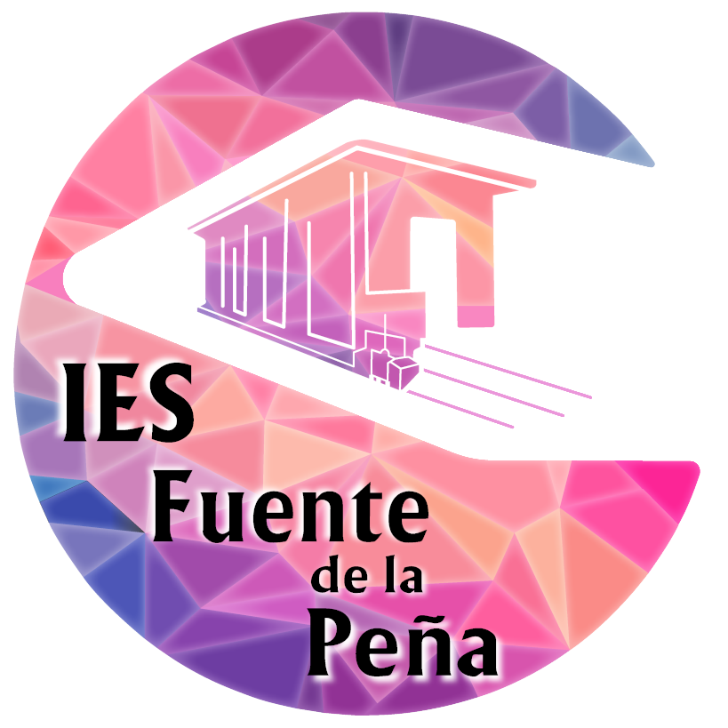

Programas de Refuerzo · IES Fuente de la Peña
1 · Alumno/a
Apellidos y nombre
Curso
Grupo
2 · Profesorado
Departamento didáctico
Profesor/a
Tutor/a
Materia/ámbito
3 · Aplicación de la medida
Materia pendiente
Curso de la materia pendiente
Refuerzo · fecha de inicio
Refuerzo · fecha de finalización
Profundización · fecha de inicio
Profundización · fecha de finalización
4 · Propuesta curricular
Competencias específicas
Criterios de evaluación
Saberes básicos
5 · Observaciones
6 · Fecha de la firma
Generar PDF
Nuevo alumno
Guardar borrador
Cargar borrador
Cargar medidas (CSV)